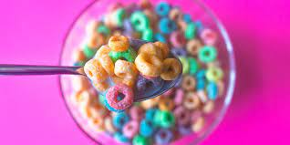

Cereal

Cereal
Cereal is an American staple. Typically served with a glass of juice.
Cereals can range from being sugary with marshmellows to healthful bran flakes.
Whichever type you choose most are made the same way.
Ingredients
- Cereal of Choice (I prefer Fruit Loops)
- Milk of Choice (I prefer cow's milk)
- Banana
Instructions
- Pour cereal of choice into bowl.
- Pour milk on top of cereal.
- Cut up banana.
- Add banana to cereal.